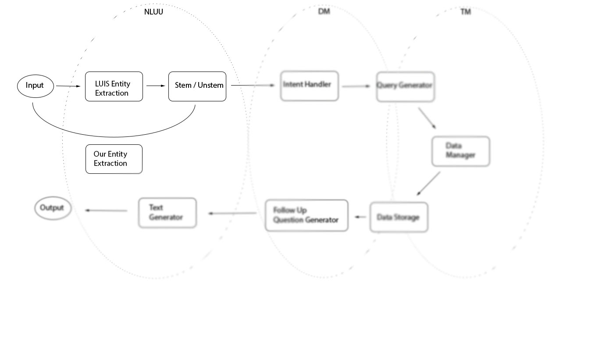

NLUU: Natural Language Understanding Unit
How to handle and classify natural langugage
Other parts of the project
Intent analysis and entity extraction
The NLUU is responsible for all things relating to natural language in both input and output. We rely on third-party libraries like Python's nltk and Microsoft's LUIS (Language Understanding Intelligent Service) that deal with raw text and break it down or otherwise analyze it in a number of useful ways. The NLUU is also responsible for creating the response to any input that we get from a client. This is accomplished by using a number of templates to build the structure of our responses and then filling in any necessary information with information returned from the Dialogue Manager.

NLTK
We use nltk’s part of speech tagger to extract parts of sentences that we believe are likely keywords and the VADER sentiment analyzer to identify the sentiment of a client’s utterance, stripping away semantics. Additionally, we use nltk's word stemmer and the operating system's list of words to create a dictionary whose keys are word stems and values are lists of words whose stem is the key. This allows us to effectively expand keywords into a number of related words when querying the database to hopefully provide better results. nltk can be found here.

LUIS
We use Microsoft's LUIS to extract intent from a client's response. We have trained the LUIS program on a number of utterances and flagged each as a particular intent. For instance, "Register me for math of cs" yields a ScheduleClass intent, meaning that the client wants to add a class to their schedule. We then use this knowledge of what the client wants to do to determine our next actions. Microsoft LUIS is part of the Azure program, and you can make an Azure account here, and LUIS can be found here. We have included our LUIS JSON file so that anyone wishing to extend or use our project can train on top of our existing intents and entities instead of starting over. For our project to run, you will likely need to change the luisurl in the config.json file to match the url of the LUIS project that you create.